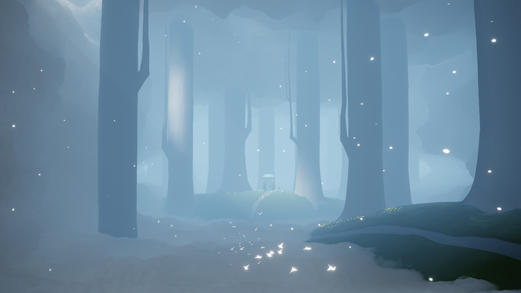
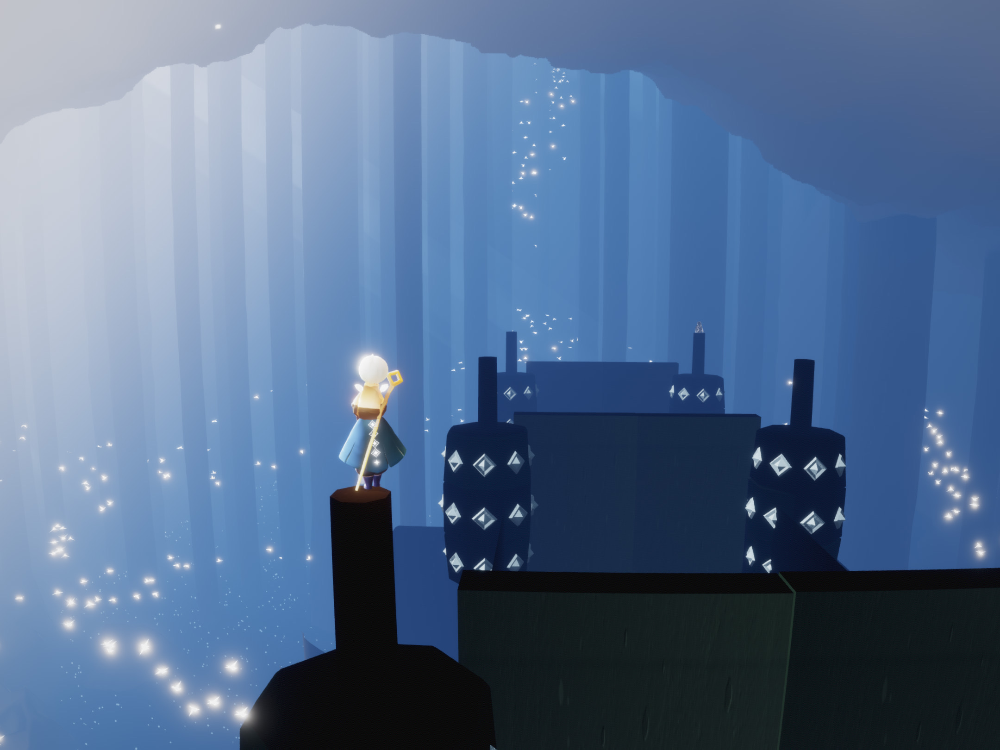
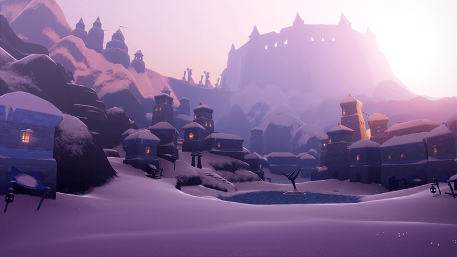

.JPG)
SKY: Children of the Light is a free mobile multiplayer game available to the iOS and Andriod platform, and soon on the Nintendo Switch. Classified under the category "Adventure" in the app store and in both the app store and the Google Play Store listed as Editor's Choice, SKY is played by all ages.
There are seven different maps in this game, starting with the Isle of Dawn, the starting point of everyone who first begin this game. Chronologically, the other maps are Daylight Prairie, Hidden Forest, Valley of Triumph, Golden Wasteland, Vault of Knowledge, and finally Eye of Eden. Players gather winged lights, spirits, and candles along the journey. As players gather more winged lights, they gain more wings that aid the playor to fly farther distances.
Here is one of a scene in the Hidden Forest:

Candle torches are used for unlocking unique outfits for each playor, some that requires in-app purchases. Some playors farm candles everyday for two hours, while others are more loose on collection of items. Candles can be traded for hearts to unlock different outfits, such as the blue cape in this image.

More explanations can be found here: Getting Started
For most playors, the most exciting aspect of this game is probably the release of new seasons that lasts for 70 days per season. Every season brings new maps, spirits, and most importantly, oufits and items that users yearn for. This is the currect season: Season of Dreams

Some people enjoy the challenge of journeying through the different stages and maps. Others enjoy collecting the different outfits and playing the different instruments. This is a Full Wardrobe (not the latest though) that can be valued up to 2k dollars if sold to other players.
For me personally, I enjoy the art styles of this game. The landscapes of the different maps have their own unique style and theme. Sometimes when I'm bored, I'll go to one of my favorite maps (right now it's the new Dream Season map) and just listen to the soothing bgm and observe the strangers coming by.
But honestly after a few weeks or months of playing SKY, it will feel really bland and boring at times. What SKY really grasps to keep users to stay are the acquaintances and friends that they met along the journey. This is someone I met from this game that made me continue SKY.